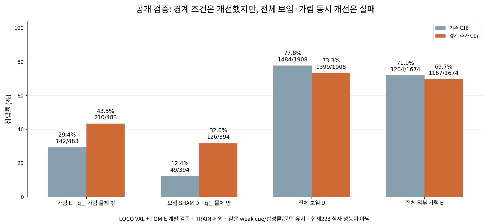
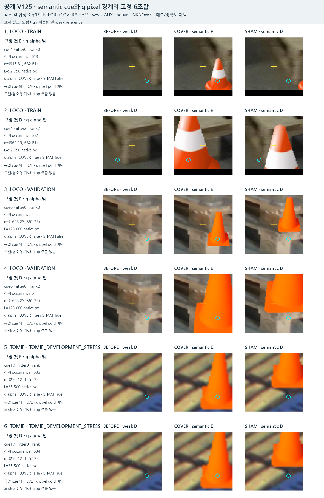

같은 가림 장면에서 초기 점만 옮겨본 결과
경계 조건은 일부 개선했지만, 보임과 가림을 함께 안정적으로 맞히지는 못했다.
공개 source에서4,896행을 만들고, frozen C16 기준선과 경계 반례를 추가 학습한 C17을 비교했다. 현재223 실사는 이번 실험에 사용하지 않았다.
공개 검증 결과 · TRAIN 제외

LOCO VAL + 한 TOMIE 개발 episode의 상관 파생 사례. 현재 실사 성능이 아니다.
| 조건 | C16 | C17 |
|---|
| 기준 단서는 가림 · q는 물체 밖 | 142/483 (29.4%) | 210/483 (43.5%) |
| 기준 단서는 보임 · q는 물체 안 | 49/394 (12.4%) | 126/394 (32.0%) |
| 전체 보임 | 1484/1908 (77.8%) | 1399/1908 (73.3%) |
| 전체 가림 | 1204/1674 (71.9%) | 1167/1674 (69.7%) |
전체 가림 정답도1,204→1,167/1,674로 줄었다. 특정 경계 조건의 향상을 전체 개선으로 해석하지 않는다. 문턱은raw logit0으로 유지했다.
어떤 반례를 추가했는가
같은 기준 cue를 덮는 COVER와 cue를 보존하는 SHAM은 그대로 두고 q를각축±0.25L0 움직였다. 원 uncertainty를 줄이지 않았으며 전체가 crop안에 남는 것을 검산했다. 노란+는q, 하늘원은기존weakreference다. 표시는 설명용 복사본이며 모델 입력은 무표시다.

고정6개 조건·5개서로다른triplet. 같은TOMIEtriplet이두조건에해당하므로중복을유지했다.
q가 가림 물체 밖이어도기준cue는가려질수있고, q가물체안이어도기준cue는보일수있다. alpha밖이 곧target pixel이라는뜻은아니다.
실제 실행과 확인
기존 중앙544행의crop·valid·q/L/context·1928차원특징·C16점수가정확히일치했다. C17은기존작은head221,825개파라미터만1,000회학습했고공개18항목BCE로900회checkpoint를동결했다. 기존15회귀는PASS이나새10진단중8개는FAIL이다.
현재 실사 최신 결과는C16의보임1,137/1,147·외부가림35/90그대로다. 새C17의실사성능을측정하거나기존모델보다좋아졌다고주장하지않는다.
C16 실제 성공·실패 crop과전체90개평가 보기
별도로 확인한 공개 원본 후보
 LOCO 공식TRAIN의6take에서모델점수없이메타데이터로고른6장. 이번C17학습에는사용하지않았다.
LOCO 공식TRAIN의6take에서모델점수없이메타데이터로고른6장. 이번C17학습에는사용하지않았다.
일부 목재 구조는보이지만흐림·작은대상·랙/용기구조와의혼동이있다. 플라스틱팔레트의원본다양성을확보했다고할수없다.
다음 원인 분리
- 현재 실사 재평가로 새 모델을 고르지 않는다. C17은 공개 경계 검증에서도 보임·가림을 함께 만족하지 못해 후속 원인 분리가 필요하다.
- 기존 학습 목표의 출처를 확인한 뒤, 동일 cached-feature/구조에서 새 semantic 경계 loss만 학습하는 공개 자료 진단으로 기존 loss의 간섭과 특징·head 한계를 분리한다. 이를 배포 모델이나 목표 해결로 대체하지 않는다.
- 그 결과를 바탕으로 기대 구조와 주변 재질의 공간 관계를 유지하는 입력/학습 또는 실제 공개 원본 cue 다양성을 보강한다. 현재 평가 라벨로 설정을 선택하지 않는다.
새경계자료로어떤오류가바뀌는지는확인했다. 기존목표와loss의간섭, 작은crop/특징에서기대부품을식별하는한계는더검증해야한다. 아직목표해결상태가아니다.
범위와 저장 근거
- 이번 수치는 공개 실사 배경에 물체 cutout을 배치한 조건부 weak cue 실험이다. 현재223 실사·정확한 native 키포인트 gold 성능이 아니다.
- 4896행은9장 원본·32개 cue의 상관 파생 자료다. 새 원본 다양성은 늘지 않았으며 추가 학습용은3장·6cue의795known available행이다.
- 원 cue uncertainty·합성물·donor·원본 fold는 유지했다. q offset은각축±0.25L0의공개emulation이며 실제 초기 추론 좌표를 교정한 것이 아니다.
- 교사 U468과 입력 U51(D27/E24)은 별개다. 입력 U는 전체 계획 평가 분모에 보존하고 학습 손실에서 제외했다.
- V95에도 q alpha와 semantic cue label 분리 사례가 있었다. 이번 기여는 같은 장면의 고정 q 격자로 의존성과 학습 효과를 대조한 것이다.
- 새 공개 원본6장은후보검토만했다. take5에목재구조가있고전체적으로흐림·작은대상·대상불명확성이있어플라스틱다양성확보로해석하지않는다.
- 초기 기하 self 경로는 별도이며 S/U를 D/E학습에 넣지 않았다. 현재223/V112/PnP/좌표교정 호출은0이다.
결과JSON · 독립저장결과검산